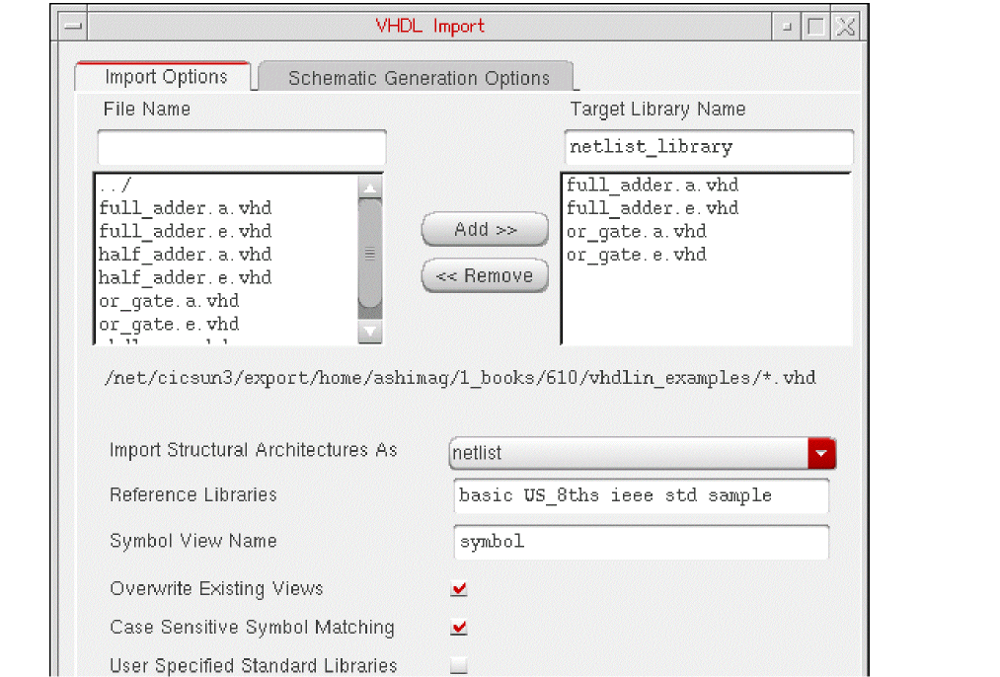

4
Importing a Simple VHDL Design
This chapter discusses the following:
- Introduction to the Example Design
- Checklist Before Importing a Design
- Setting Up the Library Environment
- Importing to VHDL Cells
- Importing to a Netlist
- Importing to a Schematic
Introduction to the Example Design
In this chapter, you import a simple example VHDL design. This example is included in the Cadence software /tools/dfII/samples/vhdlin/Test3, where <dfII_install_dir> is your installation directory.
The design is a full adder that includes a VHDL design of a half adder and an OR gate. The half adder contains the behavioral information, while the full adder is only structural. The entities (e) and architectures (a) are split into separate files. The VHDL design directory includes
full_adder.a.vhd
full_adder.e.vhd
half_adder.a.vhd
half_adder.e.vhd
or_gate.a.vhd
or_gate.e.vhd
You can import the design into each of the three types of outputs:
Checklist Before Importing a Design
Before you use VHDL In to import a design, use the following checklist to review what you need:
- What do you want to convert the VHDL design into?
- Do you have all the design units you need?
- Do you have the library units referenced by the design?
- Can the parser parse your design?
- Have you modified the design to eliminate or change those constructs that VHDL In cannot convert? (See Chapter 6, “Conversion Issues.”)
-
Have you listed all the Cadence libraries required by VHDL In in a
cds.libfile either in the current working directory or in the standard installation path? - For standalone mode line commands
Setting Up the Library Environment
To set up your library environment before you import the example design, follow these steps:
-
Modify your
cds.libfile to include the five minimum required libraries:IEEE (ieee).
The process for referencing these libraries is described Chapter 2, “Getting Started with VHDL In.” - Start VHDL In from the CIW menu banner or from the VHDL Tool Box.
-
Create the VHDL design files for the full adder in the directory of your choice.
In this example, the directory used is~/vhdlin_examples/simple_design/
Importing to VHDL Cells
In this section, you import the full adder design as a VHDL design
Setting Up the VHDL Import Form
Follow these steps to set up the VHDL Import form for the import process.
-
In the CIW, select File – Import – VHDL.
The VHDL Import form opens. -
Locate the directory for the VHDL source files you want to import.
You can move down a directory in either of the following ways:- Enter a path to the directory in the File Name field and press Return.
- Double-click a directory in the Files List Box.
You can move up one directory any of the following ways:- Enter the path to the directory in the File Name field and press Return.
- Enter two dots (..) in the File Name field and press Return.
- Double-click ../ in the Files List Box.
The correct path is displayed below the Files List Box, and the source files are displayed in the Files List Box. -
Display only files matching a certain pattern, from the current directory. (This is optional.)
Enter the pattern to match with wild card characters in the File Name field and press Return. The Files List Box lists only VHDL files in the directory matching the string you entered in the File Name field. -
Select and add each source file you want to import from the File Name List Box to the Import Files List Box.
To locate a file name in the Files List Box, use the scroll bar to the right of the Files List Box.
You can select a single file and add the file to the Import Files List Box any of the following ways:- Double-click the name in the Files List Box.
- Enter a file name in the File Name field and press Tab.
- Enter a file name in the File Name field and click Add>>.
You can also select multiple files (listed adjacently) and add them simultaneously to the Import Files List Box. Drag the mouse across the file names to highlight them, and click Add>>. -
Press Tab to go to the Target Library Name field.
Do not press Return. Pressing Return is the same as clicking OK, which indicates you are ready to import. The form closes when you press Return after you specified an existing target library. A dialog box with an error message appears when you press Return without specifying a target library. -
In the Target Library Name field, enter the target library name that you want to import the source files into (vhdl_designs). Press Tab to finish.
To accommodate the name mapping scheme used by the ncvhdl parser, use only lowercase letters to name your target libraries. -
Set the Import Structural Architectures As cyclic field to vhdl.
You can leave all other options at their default setting. -
In the Reference Libraries field, add sample, std, and ieee to the list.
-
Click Apply.
Clicking Apply instead of OK keeps the form open. You can then start the next example of importing to a netlist without having to complete the list of libraries in the Reference Libraries field again or having to add the designs to the Import Files List Box again.
The system imports the design file names into the target library you specified. You can use the VHDL Tool Box form or the Library Manager form to read or edit the cell view of each file.
Creating a New Target Library
If you specify a target library name that does not exist, a dialog box opens, asking you if you want to create the new library. If you click Yes, the New Library form opens.
-
Enter the library name and the directory where you want the library located.
Put the Cadence versions of the VHDL design, the netlist, and the schematic in ~/vhdl_designs, ~/netlist_library, and ~/sch_lib, respectively.
Select Do not need process information, and click OK
A message appears in the CIW display area:
Created library "vhdl_design" as “/net/.../~/vhdlin_examples/simple_design/vhdl_designs”
After the new library is created, you must go back to the VHDL Import Form and click Apply again to import the file names you specified into the target library you just created.
Viewing the Results
A message in the CIW display area tells you that the VHDL Import process has started. When the process finishes, you are presented with a dialog box, which asks if you want to view a summary file. If you click Yes, the VHDL Tool Box status window appears, displaying a summary file. You can also view the log of resulting cellviews of your design in the summary file.
Viewing the Summary File
When the import process has finished successfully, you can examine the summary file to check the results of importing to VHDL. The summary file contains information about the number of files processed by VHDL In, the number of files attempted to be imported by VHDL In, the design units imported, and their view types. The summary file also mentions the files that VHDL failed to import, and the reason for the failure.
The following summary file was generated for a successful VHDL to VHDL import process. You can view the summary file through the VHDL Tool Box status window labeled

To close the VHDL Tool Box status window
The contents of the summary file and the error file are saved with the name you had typed in the Summary File field in the VHDL Import Form. The default value of Summary Field is ./vhdlin.summary.
For examples of error messages, see Chapter 7, “Error Messages.”
- To close the VHDL Tool Box status window, select File – Close.
Viewing the Design’s Cellviews
Once the import process has finished successfully, you can examine the cellviews in the target library (such as the entity cellview) to check the results of importing to a VHDL cell.
-
In the CIW, select Tools – Library Manager.
The Library Manager window opens. -
In the Library list box, click the vhdl_designs library name.
The Cell list box displays two cells for the vhdl_designs library: full_adder and half_adder. -
In the Cell list box, click the full_adder cell name.
The View list box displays three cellview names for the full adder design: entity, structure, and symbol.
-
In the View list box, double-click the entity cellview file name.
A text editor window opens, displaying the contents of the entity cellview, as shown below: a text file and directory for the entity file for the full_adder design.
You can open the same file in the Language Sensitive Editor, or LSE (emacs) that highlights the language specific keywords. If you are using LSE and the text editor window is empty, use the File – Open command to open~/vhdl_designs/full_adder/entity.
VHDL In places VHDL design text files in thevhdl.vhdfile. You can open thevhdl.vhdfile for viewing to verify the contents of the file. -
To open the
vhdl.vhdfile for viewing, double-click thevhdl.vhdfile name.
The top half of the LSE text editor window displays the contents of the vhdl.vhd file, and the bottom half shows the files and directories in the entity directory.
Importing to a Netlist
In this section, you import the full adder design as a OA format netlist. If the VHDL Import form is still open from the first example, Importing to VHDL Cells, you can skip steps 1 through 3.
Setting Up the VHDL Import Form
Follow these steps to set up the VHDL Import form for the import process.
-
In the CIW, select File – Import – VHDL.
The VHDL Import Form opens. -
In the Files List Box, double-click entries until the design directory is displayed.
To move the display up one directory, click ../. To display the contents of a directory, click the directory name. -
In the Target Library Name field, enter the name of the target library (netlist_library).
To accommodate the name mapping scheme used by the ncvhdl parser, use only lowercase letters to name your target libraries. -
Set the Import Structural Architectures As cyclic field to netlist.
You can leave all other options at their default setting. -
Highlight the four file names for the full adder design, and click Add>> to add them to the Import Files List Box.
You can also double-click a file name to transfer a file.
Drag the cursor across the file names to highlight multiple files in the box. -
Click Apply.
When you click Apply instead of OK, the form remains open. You can then start the procedure Importing to a Schematic at step 3.

Creating a New Target Library
If you specify a target library name that does not exist, a dialog box opens, asking you if you want to create the new library. If you click Yes, the New Library form opens.
-
Enter the library name and directory, select Do not need process information, and click OK
A message appears in the CIW display area:Created library "netlist_library" as “.../vhdlin_examples/simple_design/netlist_library”
After the new library is created, you must go back to the VHDL Import Form and click Apply again to begin the import process.
Viewing the Results
A message in the CIW display area tells you that the VHDL Import process has started. When it finishes, you are presented with a dialog box, which asks if you want to view a summary file. If you click Yes, the VHDL Tool Box status window appears, displaying a summary file. You can also view the log of resulting cellviews of your design in the summary file.
Viewing the Summary File
When the import process fails, you can examine the errors in the VHDL Tool Box status window labeled VHDL Errors/Warnings
For examples of dialog boxes displaying error messages, see Chapter 7, “Error Messages.”
To close the VHDL Tool Box status window
When the import process has finished successfully, you can examine the summary file to check the results of importing to a netlist. The summary file contains information about the number of files processed by VHDL In, the number of files attempted to be imported by VHDL In, the design units imported, and their view types. The summary file also mentions the files that VHDL fails to import, and the reason for the failure.
You can view the summary file through the VHDL Tool Box status window labeled
To close the VHDL Tool Box status window
The contents of the summary file are saved with the name you had typed in the Summary File field in the VHDL Import Form. The default value of Summary Field is ./vhdlin.summary.
Viewing the Design’s Cellviews
Once the import process has finished successfully, you can examine the cellviews in the target library (such as the structure cellview) to check the results of importing to a netlist.
-
In the CIW, select Tools – Library Manager.
The Library Manager window opens. -
In the Library list box, click the netlist_library library.
The Cell list box displays three cells: full_adder, half_adder, and or_gate. -
In the Cell list box, click the full_adder cell name to display its cellviews.
The View list box displays three cellview names: entity, structure, and symbol
-
Click the structure cellview name to display the structure view as shown below:
VHDL In places the VHDL design netlist in thenetlist.oa.These files are in the OA format required by Cadence tools. The following is the structure directory under the full_adder component.
Importing to a Schematic
In this section, you import the full adder design as a Virtuoso Schematic Editor L schematic. Start at step 3 if you left the VHDL Import form open from the previous example, Importing to a Netlist.
Setting Up the VHDL Import Form
Follow these steps to set up the VHDL Import form for the import process.
-
In the CIW, select File – Import – VHDL.
The Import form closes and the VHDL Import Form opens. -
Double-click entries in the Files List Box until the design directory is displayed.
To move the display up one directory, click ../. To display the contents of a directory, click the directory name. -
Enter the name of the target library (sch_lib) in the Target Library Name field.
To accommodate the name mapping scheme used by the ncvhdl parser, use only lowercase letters to name your target libraries. -
Highlight the four file names for the full adder design, and click Add>> to add them to the Import Files List Box.
You can also double-click a file name to transfer a file. -
Set the Import Structural Architectures As cyclic field to schematic.
You can leave all other options at their default setting.
Although you are generating a schematic in this example, you do not have to use the options under the Schematic Generation Options tab. You are only using the default settings for schematic generation to import this example design.
However, the form remembers the last schematic generation options used. So if you have recently performed schematic generation, click the Schematic Generation Options bar to open that form and click Defaults to reset all the options, then click OK. -
Click Apply.
When you click Apply instead of OK, the form remains open. You can then start the next example at step 5.
Creating a New Target Library
If you specify a target library name that does not exist, a dialog box opens, asking you if you want to create the new library. If you click Yes, the New Library form opens.
-
Enter the library name and directory, select Do not need process information, and click OK.
A new library is created, and VHDL files imported. There is no need to go back to the VHDL Import form to click Apply again.
Viewing the Results
A message in the CIW display area tells you that the VHDL Import process has started. When it finishes, you are presented with a dialog box, which asks if you want to view a summary file. If you click Yes, the VHDL Tool Box status window appears, displaying a summary file. You can also view the log of resulting cellviews of your design in the summary file.
Viewing the Summary File
When the import process fails, you can examine the errors in the VHDL Tool Box status window labeled
For examples of dialog boxes displaying error messages, see Chapter 7, “Error Messages.”
To close the VHDL Tool Box status window
When the import process has finished successfully, you can examine the summary file to check the results of importing to a schematic. The summary file contains information about the number of files processed by VHDL In, the number of files attempted to be imported by VHDL In, the design units imported, and their view types. The summary file also mentions the files that VHDL failed to import, and the reason for the failure.
You can view the summary file through the VHDL Tool Box status window labeled VHDL Tool Box Log File. When the import process finishes, the VHDL Tool Box status window display of the summary file looks similar to this.
To close the VHDL Tool Box status window
The contents of the summary file are saved with the name you had typed in the Summary File field in the VHDL Import Form. The default value of Summary Field is ./vhdlin.summary.
Viewing the Design’s Cellviews
Once the import process has completed successfully, you can examine the cellviews in the target library (such as the structure cellview) to check the results of importing to a schematic.
-
In the CIW, select Tools – Library Manager.
The Library Manager window opens.
-
In the Library list box, click the sch_lib library name.
The Cell list box displays three cells for the sch_lib library: full_adder, half_adder, and or_gate. -
In the Cell list box, click the full_adder cell name.
The View list box displays three cellview names for the full adder design: entity, structure, and symbol. -
In the View list box, double-click the structure cellview file name.
The Virtuoso Schematic Editor L opens, displaying the contents of the structure cellview: a schematic for the full_adder design. The following figure shows the structure view of the full_adder cell: a Virtuoso schematic for the VHDL adder design.
This schematic results from using the default values for the schematic generation options.
You can also select the symbol view of any design element and view and edit the element symbol in the Virtuoso Symbol Editor L window. -
In the Library Manager window, click the or_gate cell, and double-click its symbol view.
The Virtuoso Symbol Editor L window opens, displaying the symbol generated by VHDL In for the OR gate.
Return to top